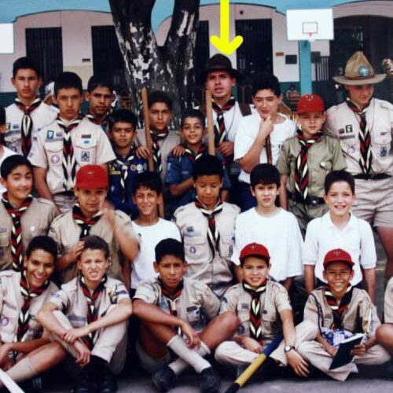
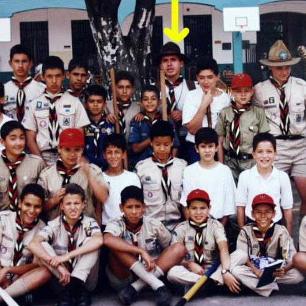

Reseña Historica
Fue un 7 de febrero cuando un regalo de los hijos de Don Bosco y un sueño realizado, hacer vivo el espíritu y el estilo de Don Bosco, iniciar la tarea de la educación, en un ambiente parroquial y familiar de este poblado sector de la ciudad, noble, decente y cristiano por esencia.
Nuestro colegio abrió sus puertas con cerca de 113 estudiantes por lo pronto y para ese año los tres primeros grupos de instrucción primaria…todo faltaba y lo había todo: el espíritu de Don Bosco, poderoso, lleno de optimismo y alegría.
Continuó el afán de educar y evangelizar, vinieron los directores dinámicos de recia contextura religiosa y moral, semillero de innumerables vocaciones sacerdotales y cada uno ellos, miembros activos de esta comunidad hicieron esfuerzos ingentes hasta llegar a completar la actual obra ejemplarizante, dotada del fervor y de la espiritualidad que imprime la filosofía salesiana.
 

Historia Colegio
Yo entre al Sufragio en el año 2019 a cursar el grado octavo y actualmente estoy cursando el grado 11, a punto de enfretarme realmente a la vida y de dejar una etapa muy importante y bonita para mi, donde pude crecer tanto en lo academico como en lo personal.
Durante estos 3 años tuve la oportuidad de conocer muchas personas las cuales me trajeron bastantes enseñanzas, y a pesar de que algunas ya no estan, dejaron cosas muy buenas para mi vida. Lo que mas me gusta del colegio son los profesores y sus formas de enseñar, ademas lo cercanos que pueden llegar a ser con los estudiantes,creando unos grandes y duraderos vinculos que nos marcaran para el resto de la vida.